CANOL
Линии обжарки пончиков
Конвейерные линии для берлинеров, донатсов и пончиков обжаривают изделия с двух сторон. Можно согласовать загрузку, способ нагрева и фильтрацию масла.
- Модификации 180, 260, 400 и 500
- Контроль уровня масла
Фотографии и схемы

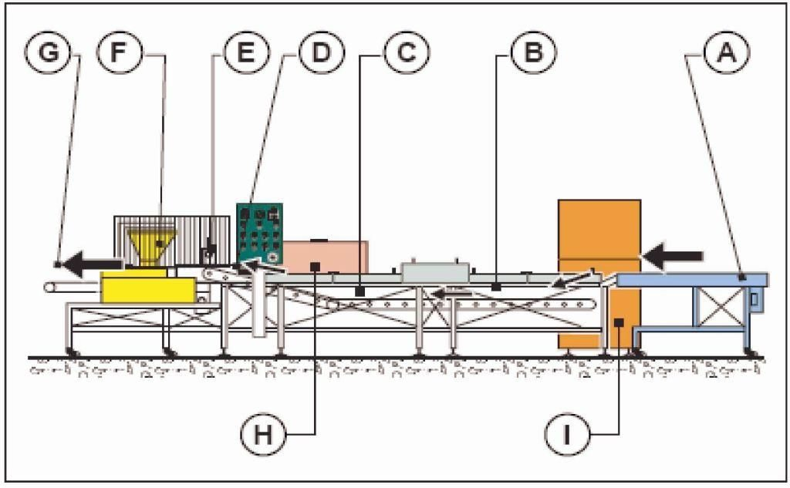

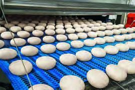

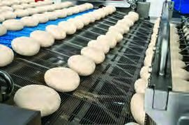

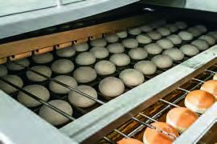

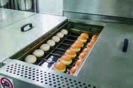

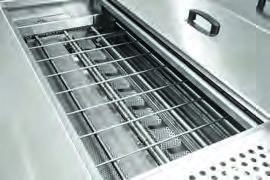

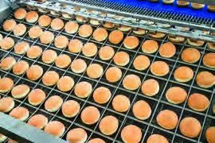

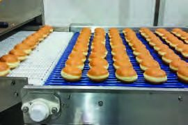

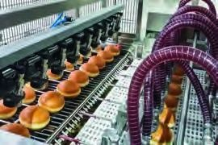

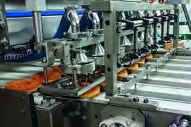


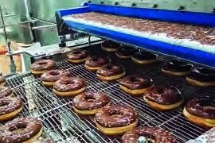
Описание и комплектация
Линии обжарки CANOL (модификации 180-260-400-500) служат для непрерывного цикла производства кондитерской продукции, которая требует обжарки во фритюре с верхней, затем с нижней стороны. Сюда относятся берлинеры, донатсы, пончики, крапфены. Для фритюрницы CANOL можно задать количество раз, когда будет переворачиваться продукция: один или два. Затем она извлекается из жарочного чана, масло с нее стекает, далее переходят к наполнению заготовок начинкой: джем, крем, шоколад, варенье и т.д.
- Страна производитель: Италия
- Высокая производительность линий при низких расходах
- Автоматическое поддержание уровня масла в жарочной ванне
На правах представителя наша компания TRADE TECHNOLOGIES осуществляет доставку и пусконаладку оригинального оборудования CANOL заказчикам из РФ, Белоруссии, Грузии и Казахстана.
Этапы изготовления продукции
noindexA) загрузка продукции;
B) поступление в жарочный чан;
C) полный процесс жарки во фритюре;
D) выход продукции из жарочного чана;
E) блокировка продукции;
F) наполнение начинкой;
G) разгрузка / упаковка продукции;
H) блок подогрева масла;
I) блок для декантации масла.
Желаемое время тепловой обработки кондитерских изделий, а также сам их тип определяют производительность жарочных линий CANOL. Также они поставляются с различными вариантами разогрева масла:
- на газовых горелках,
- с помощью электрического тока,
- на котле с диатермическим маслом.
В линиях CANOL для обжарки Мод. 500 внедрена автоматическая система натяжения цепей, которая компенсирует их тепловое расширение.
Загрузка продукции в жарочный чан CANOL может происходить: вручную; автоматическим ленточным загрузчиком Мод. CAR; через автоматическую расстоечную камеру. Уровень масла в жарочном чане поддерживается с помощью контрольного блока CANOL GCL. Он при необходимости доливает предварительно разогретое свежее масло. Масло может фильтроваться двумя разными способами:
- блок для декантации DEC 1000,
- автоматическая система непрерывного цикла GALILEO-2.
Блоки для начинения продукции выпускаются в двух видах: с присутствием сенсорного датчика наличия продукции (GLOBUS) или без него (FC). После введения начинки кондитерское изделие может быть обсыпано сахаром и охлаждено на соответствующем транспортере.
Модели меньших размеров (фритюрницы CANOL 180-260) могут работать с участием единственного оператора, если на выходе с жарочной линии установить поворотный транспортер (90°). Он переместит готовые изделия в зону отгрузки.
Материалы производителя
CANOL проектирует оборудование для пекарен и кондитерских в Италии с 1973 года. Мы поставляем линии на правах представителя завода.
Стоимость и поставка
Стоимость рассчитываем по комплектации. Для оборудования CANOL доступны выкуп, лизинг и рассрочка. Безналичная оплата в рублях по курсу ЦБ РФ на день оплаты. В предложенной схеме платежи составляют 30%, 60% и 10%, последний платёж — после ввода в эксплуатацию.